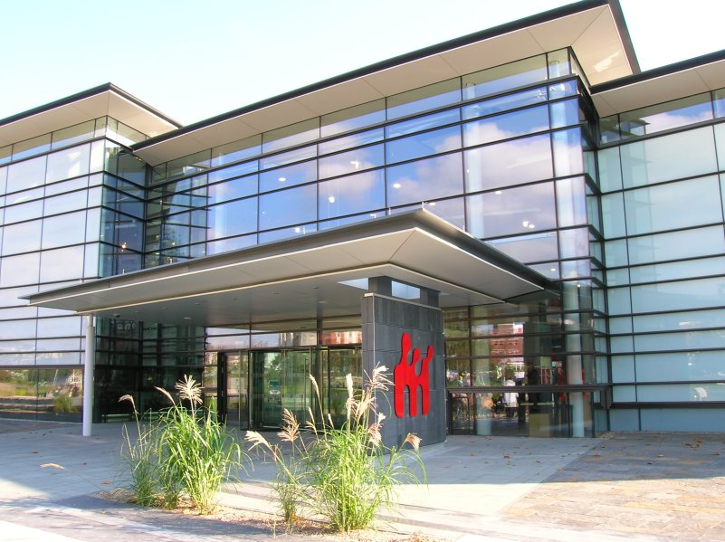

Blog
January project meeting

On a very wet day in January, the ‘City Witness’ project research team and our many partners and advisors in Swansea gathered together for a meeting at the National Waterfront Museum, Swansea. 14 of us in total had braved floods and storms to get there, including academic team members from Southampton, Belfast and London, as well as our partners from Swansea Museum, Swansea Council, the Glamorgan Gwent Archaelogical Trust, West Glamorgan Archives and Swansea University.
The meeting was an important milestone for the project team, giving us the opportunity to share our work to this point, as well as models and plans (particularly for the website) looking forward. We also gathered a huge amount of useful feedback and suggestions from our partners and advisors.
It was particularly exciting to finalise plans for the exhibition and events programme at Swansea Museum (watch this space!) and to discuss with senior Council representatives how our research can tie in with the current castle / city centre enhancement plans. We talked about the practicalities of our pavement marker scheme, and also ide.jpgied other opportunities to contribute to the Council’s project via collaboration with the independent consultant, artist and Bright 3D, the commercial company working on the interpretation. As a result of the meeting, we’ve been involved in some really exciting work with the commissioned artist, Rubin Eynon, and some great plans are emerging – again, more to follow.
We would like to thank all our partners and advisors again for giving up their time to attend the meeting, and for all the helpful ideas, suggestions, links and new opportunities which have emerged.